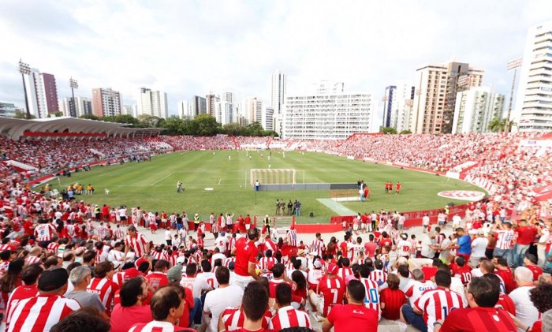

FANÁUTICOS DO CAPIBARIBE
História
Fundado por dois grupos de remadores recifenses em 1898 como Clube Náutico do Recife, tem como data de fundação oficial 7 de abril de 1901 e teve seu primeiro time de futebol em 1905, formado por ingleses e alemães, mas só vindo a prática do esporte em 1909. Como instituição é um dos clubes mais antigos da Região Nordeste do Brasil, e o mais antigo do seu estado, contando com uma grande estrutura como a sede social, piscina olímpica oficial para a pratica das modalidades do tipo, duas quadras poliesportivas, bem como e principalmente o Estádio Eládio de Barros Carvalho, mais conhecido como Estádio dos Aflitos, por localizar-se no bairro recifense dos Aflitos. Tanto o estádio como a sede e todo seu entorno foram classificados como patrimônios imateriais de Pernambuco. A capacidade da praça de esportes atualmente é de cerca de 20 mil espectadores. Também lhe pertence o Centro de Treinamento Wilson Campos — o maior do Norte-Nordeste do país —, situado no bairro da Guabiraba, no Recife, que possui 54 hectares de área construída e conta com cinco campos oficiais e dois campos de futebol de dimensão reduzidas além de inúmeros alojamentos. Suas cores, presentes no escudo e bandeira oficial, são o vermelho e branco, enquanto que seus torcedores são conhecidos como alvirrubros.
Estádio Eládio de Barros Carvalho, o Estádio dos Aflitos
O Estádio Eládio de Barros Carvalho, popularmente conhecido como Estádio dos Aflitos, por estar localizado no bairro dos Aflitos, é o estádio usado pelo Clube Náutico Capibaribe.
Inicialmente o local foi arrendado pela Federação Pernambucana de Futebol no início do século XX, mais precisamente em 1917 para mandar os jogos do campeonato pernambucano, ao desistir da empreitada a equipe alvirrubra assumiu o terreno, construiu sua nova sede, ajudou a desenvolver a região e o bairro homônimo. Ao longo inúmeras reformas e adequações ao passar dos anos, o centenário "Campo dos Aflitos" passou ao status de Estádio, tornando-se um dos mais antigos e tradicionais estádios brasileiros.
Hino Alvirrubro
Entre as décadas de 1970 e 1990, os alvirrubros consideravam o frevo "Meu coração é alvirrubro" para sempre, do compositor Nelson Ferreira, como o hino do clube.
O hino oficial do Náutico foi oficializado somente na década de 1990. Trata-se de uma composição do músico Tovinho, que faz referências às cores e às características da equipe, assim como à paixão dos torcedores.